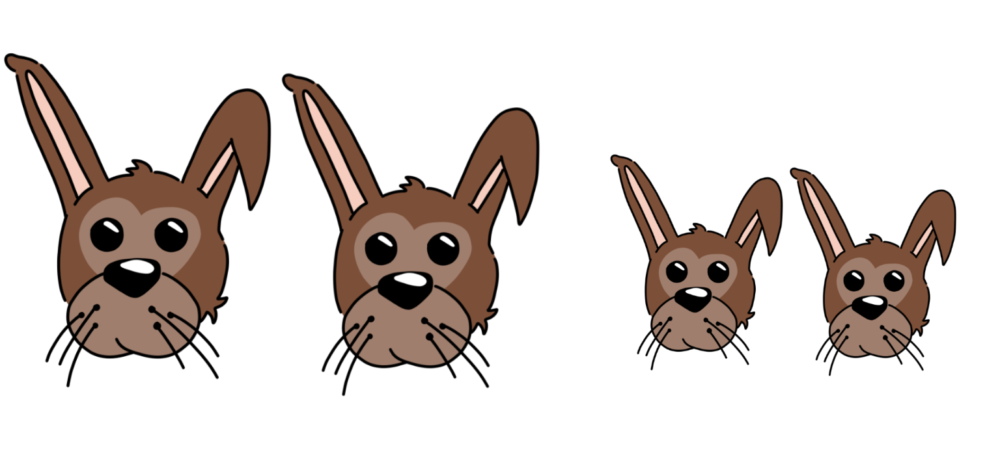
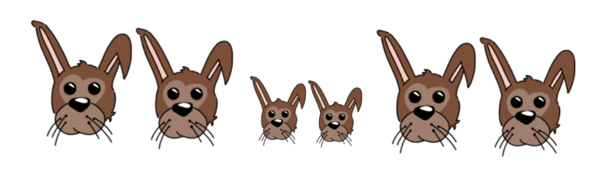
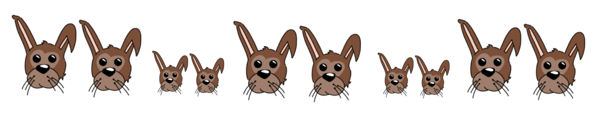

The Story of Fibonacci.
Our story begins on Day 1 with Fibonacci sitting in a park on a beautiful day. He notices 1 pair young bunnies, male and female, hopping by.
The next day, on Day 2 Fibonacci returned to the same park and noticed the same 1 pair, yet this time they have grown to rabbits, now biologically capable of procreating.
He again returned the following day, on Day 3, and on this day he noticed his pair of rabbits, but also another pair of bunnies, again paired as in one male and one female, giving us a total of 2 pair of rabbits.

Now on Day 4 Fibonacci noticed his original pair had given birth again, as well as the first litter was now grown to the age of reproduction, giving us 3 pairs of rabbits total. He deduced that it took one day for the rabbits to mature, and then another day for the rabbits to give birth to a new pair of bunnies.

On Day 5 returning once again to this same park he noticed that his original pair was there, and their first litter but not the original pair and the first litter have both produced pairs of bunnies, leaving a total of 5 pairs of rabbits at the park.

Later on Day 5, Fibonacci returns to his home and comes up with perhaps the greatest mathematical assumption in all of history,
\begin{equation*}
\mathbf{\text{ Assume that Rabbits never die! }}
\end{equation*}
Then asked himself how many rabbits would be there on day 6, or 7, or 8, or even 1000...